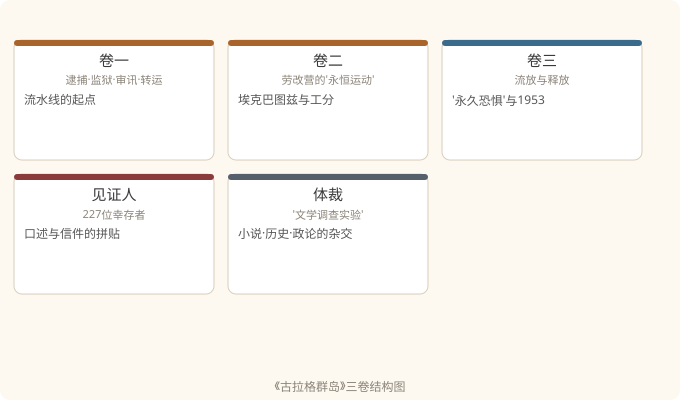

古拉格群岛
一、基本信息
| 作者 | 索尔仁尼琴 |
|---|---|
| 成书/出版 | 1973年巴黎出版（俄文；英译1974——通说待核） Aleksandr Solzhenitsyn — Encyclopaedia Britannica（百科全书） |
| 国别/地区 | 俄国 |
| 时代 | 现当代 · 20世纪 |
| 体裁 | 文学性纪实（'文学调查实验'） |
| 语言 | 俄语 |

《古拉格群岛》三卷结构图（主题·结构图）
二、创作背景
写作（Britannica）：索尔仁尼琴称其为'to compile a literary-historical record' of the Soviet prison-camp system（为苏联劳改营体系建立文学-历史记录）——自1945年被捕至1953年的亲历+227名见证人的口述与信件（通说待核）。
出版与后果（Britannica）：1973年巴黎出版后，作者被以叛国罪逮捕并驱逐（'Charged with treason and exiled in 1974 after The Gulag Archipelago appeared in Paris'）——'群岛'一词进入世界政治语言（通说待核）。
'古拉格'：ГЛАВНОЕ УПРАВЛЕНИЕ ЛАГЕРЕЙ（劳改营管理总局）的缩写——'群岛'指散布苏联的四百多个营点（通说数字待核）。
三、内容脉络
第一卷：'逮捕—监狱—审讯—转运'的流水线——作者被捕那天的细节开篇（'我于1945年2月9日在东普鲁士前线被捕'——原文意，待核）；档案谎言机器的解剖。
第二卷：埃克巴图兹等劳改营的'永恒运动'——工分的死亡计算、政治犯与刑事犯的等级、妇女与孩子的营点；'一天的价值'论（通说）。
第三卷：流放、释放后的'永久恐惧'；1940s—50s的'群岛'扩张史与斯大林之死；结语向'每个未能活到今天的读者'致哀（原文意，待核）。
结构：'一次文学调查实验'（作者自称——原文意，待核）：叙述、档案、证人陈述与政论的拼贴，每一卷都有独立编号的章节。
四、主要人物表
| 人物 | 身份 | 说明 |
|---|---|---|
| '我'（作者） | 前军官·前劳改犯 | 叙述者兼证人编号者 |
| 227位见证人 | 幸存者 | '他们的信与口述是本书的血肉'（通说）——以匿名编号出现 |
| 体系本身 | '群岛' | 真正的'主角'：档案、列车、押送、劳动指标 |
五、主题与艺术特点
- 记忆对抗抹除：'我们早已忘记：我们都是囚徒'（原文意，待核）——以文字保存被销毁的证词。
- 恶的制度化：恶不是个别坏人而是'流水线'——普通人的参与使恶运转（通说）。
- 见证者的伦理：作者自认'幸存者的债务'——写作即偿还（通说）。
- 艺术特点：三卷逾千页的编年拼贴、俚语与圣经语并置、'文学调查'的自称体裁。
六、影响与评论
- Britannica（Solzhenitsyn 条目）：'The Gulag Archipelago — described as his attempt to compile a literary-historical record' of the Soviet prison-camp system。
Aleksandr Solzhenitsyn — Encyclopaedia Britannica（百科全书） - Britannica：1974年因本书被流放——出版与放逐的因果链。
Aleksandr Solzhenitsyn — Encyclopaedia Britannica（百科全书） - 政治回响：西方左翼阵营的幻灭潮（通说待核）；'古拉格'进入世界政治词典（通说待核）。
Aleksandr Solzhenitsyn — Encyclopaedia Britannica（百科全书） - 中译：田大畏等译《古拉格群岛》（群众出版社，通说待核）。
Aleksandr Solzhenitsyn — Encyclopaedia Britannica（百科全书）
七、阅读建议
难点
- 体量（三卷近2000页）——可先读第一卷前几章与第三卷尾声。
- 俄国人名、地名与机关缩写密集——配索引。
- 文体混杂（叙事/政论/档案）——按'文学调查'定位理解。
- 田大畏、陈汉章、钱诚译《古拉格群岛》（群众出版社，通说待核）：通行全译。
- 英译：Thomas P. Whitney 与 Michael Scammell 译本（通说待核）。
先读卷一开头（被捕日）与卷二'一天'章 → 再读卷三尾声 → 按主题（转运/妇女/儿童/告密）选章。
八、待核实
- 巴黎 YMCA-Press 1973年12月出版（通说）与 CIA 资助传闻待核。
- 见证人数量（227人）待核。
- 田大畏译本出版信息待核。
- '群岛'地图（卷首图）细节待核。
本页主要来源
索尔仁尼琴的其他收录作品：古拉格群岛